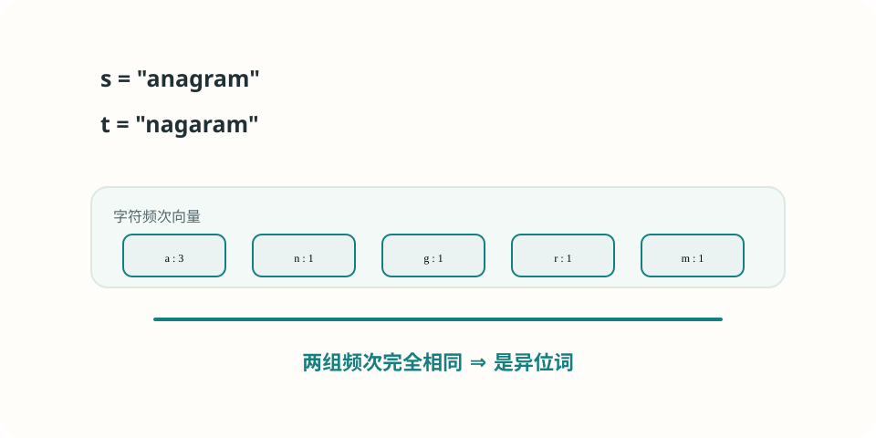
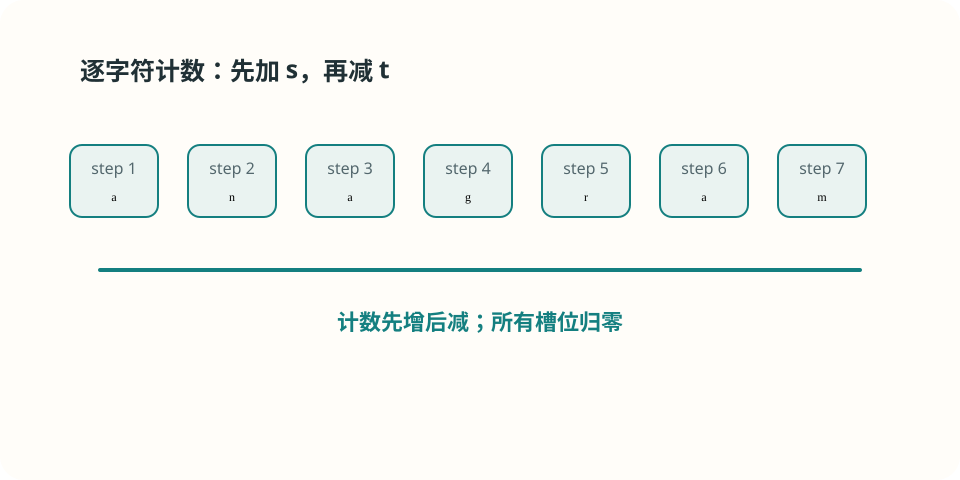
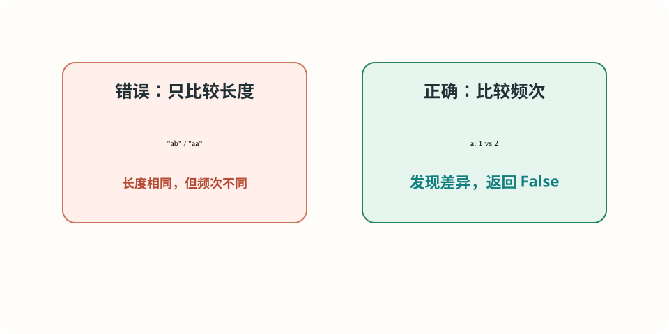

LEETCODE 242 / EASY / ARRAYS-HASHING
有效的字母异位词
把两个单词变成同一张频次表：顺序不同，字符数量必须完全一致。
Easyhash-lookup可视化题解
01 · 先弄清楚题目要做什么
给定两个字符串 s 和 t，判断 t 是否只是把 s 的字符重新排列得到。例：anagram 与 nagaram 返回 True；rat 与 car 返回 False。题目限定小写英文字母，关键是每个字母的出现次数，而不是字符顺序。
先抓住核心：把两个单词变成同一张频次表：顺序不同，字符数量必须完全一致。
02 · 从朴素方法出发
排序两个字符串后比较，时间为 O(n log n)。由于字符集固定为 26 个小写字母，可以直接计数，避免排序。
优化不是背模板，而是识别输入中可复用的信息：能否记录已经见过的内容？能否维护一个规模受控的候选集合？能否安全地排除不可能的状态？
03 · 状态与不变量
维护 26 个计数槽。先扫描 s 并加一，再扫描 t 并减一。每个槽表示两边已处理前缀的频次差；最终全部为零，当且仅当两字符串字符频次完全相同。

04 · 交互式关键步骤
以下是标准样例的确定性关键帧，不是对任意输入的在线执行。图形、步骤说明和不变量来自同一份快照数据。

步骤 1 / 4
初始化
26 个计数槽全部为 0。
所有字符的净频次差为 0。
当前第 1 步：初始化
05 · 为什么算法正确
若两字符串互为异位词，每个字母的数量相等，第二轮减法会逐项抵消第一轮计数。反过来，若所有槽位均为零，则每个字母在两边的出现次数都相同，因此两字符串的字符多重集合相同。
正确性来自状态不变量：每次更新都保持它，终止时它恰好推出题目要求的结果。
06 · Python 参考实现
实现与上面的状态定义及证明一一对应。
class Solution:
def isAnagram(self, s: str, t: str) -> bool:
if len(s) != len(t):
return False
count = [0] * 26
for char in s:
count[ord(char) - ord("a")] += 1
for char in t:
count[ord(char) - ord("a")] -= 1
return all(value == 0 for value in count)复杂度分析
时间 O(n)：两次扫描字符串，最后检查固定 26 个槽位。辅助空间 O(1)：计数数组长度恒为 26。
07 · 反例与边界检查
只比较长度会把 ab 与 aa 错判为相同；使用 set 会丢失重复次数，例如 aab 与 ab。若输入不再局限于小写英文字母，应改用字典或 Counter。

自测清单
- 最小输入、空输入（若允许）是否正确？
- 重复值、边界值或退化结构是否仍满足不变量？
- 每一次状态更新是否能在证明中找到依据？